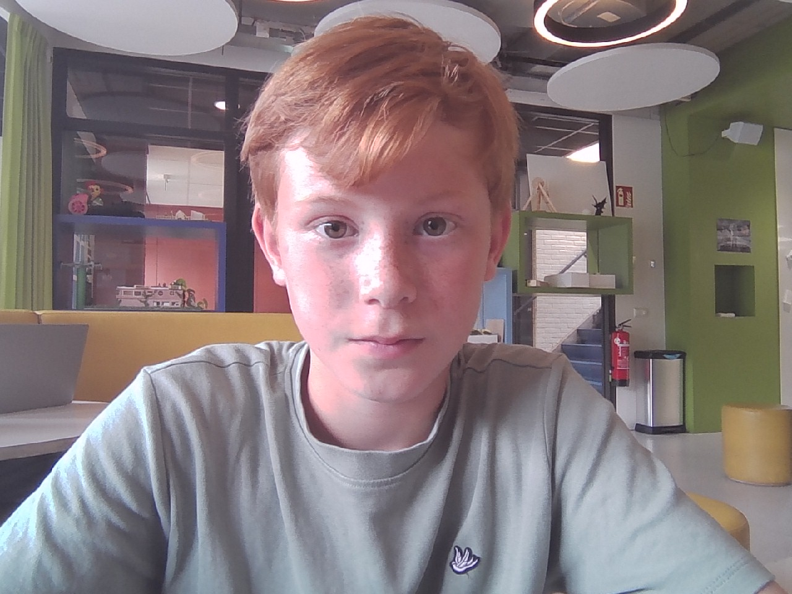

Over mij
Hallo! Ik ben Boris. Ik zit in de brugklas en volg het vak O&O (Onderzoek & Ontwerpen). Op deze website laat ik mijn projecten, ideeën en vaardigheden zien.

Projecten
- O&O Project 1 – Langzame Knikkerbaan
- We moesten toen een knikkerbaan bouwen die zo langzaam mogenlijk ging
- O&O Project 2 – Circulair Festival
- We moesten iets bedenken waardoor er minder afval zou komen na een festival
- O&O Project 3 – Aqualectra Kantoortuin
- We moesten een nieuwe kantoortuin of kantine ontwerpen
- O&O Project 4 – Watertoppers
- We moesten een oplossing bedenken tegen blauwalg


Vaardigheden
- Samenwerken
- Onderzoeken
- Taken uitvoeren
- Mijn groepje aanspreken als ze niks doen